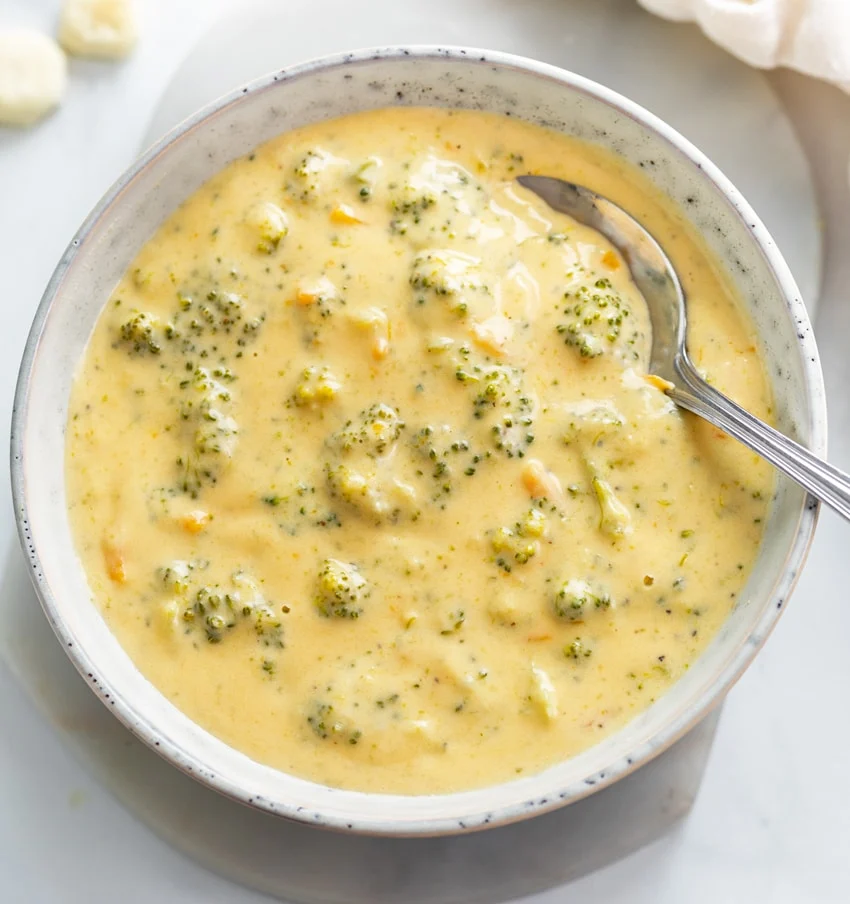

Broccoli Cheese Soup

Description
This Broccoli Cheese Soup recipe has a thick and creamy cheddar cheese broth with perfectly cooked broccoli and thin slices of carrots. It’s an easy recipe with simple ingredients that your family will love!
Ingredients
- Butter
- Onion
- Broccoli
- Chicken Broth
- Processed Cheese Loaf
- Milk
- Garlic
- Cornstarch
- Water
Steps
- Melt butter in a stockpot over medium heat. Add onion and cook, stirring occasionally, until softened. Stir in broccoli. Add broth and simmer until broccoli is tender, 10 to 15 minutes.
- Reduce heat; add cheese cubes and stir until melted. Stir in milk and garlic powder.
- Stir cornstarch and water together in a small bowl until smooth. Stir into soup; cook, stirring frequently, until thick.
- Enjoy your Broccoli Cheese Soup!